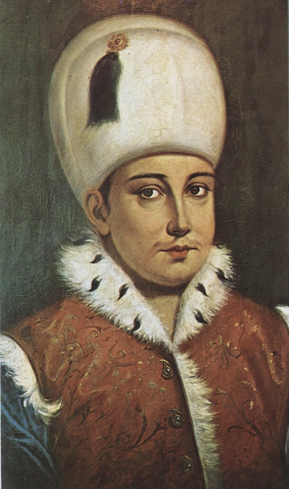

| önceki |  |
sonraki |
II. Osman (Genç Osman), Osmanlı İmparatorluğu'nun on altıncı padişahıdır. Babası I. Ahmed, annesi Mahfiruz Hatice Sultan'dır. Henüz 14 yaşındayken tahta çıkmıştır. Mükemmel bir tahsil görmüş, Doğu ve Batı dillerini öğrenmiş, cesur, yenilikçi ve Osmanlı tarihindeki ilk büyük reformcu padişahtır. Bir askeri darbe sonucu yeniçeriler tarafından şehit edilen ilk padişahtır.
Radikal Islahat Fikirleri ve Facia
- Hotin Seferi (1621): Lehistan üzerine düzenlenen seferde Yeniçeri Ocağı'nın disiplinsizliğini ve gayretsizliğini bizzat müşahede etmiş; bu ocağın artık devlete fayda değil zarar verdiğini görerek köklü bir askeri reform kararı almıştır.
- Yeniçeri Ocağını Kaldırma Planı: Yozlaşmış ocağı feshedip yerine Anadolu, Suriye ve Mısır Türkmenlerinden sadık ve profesyonel yeni bir milli ordu kurmayı tasarlamıştır.
- Saray Dışından Evlilik: Asırlardır süren harem geleneğini yıkarak Şeyhülislam Esad Efendi'nin kızı Âkile Hanım ile evlenmiş, ulema ve halk ile saray arasındaki bağı güçlendirmeye çalışmıştır.
- Başkenti Taşıma Düşüncesi: Yeniçeri tahakkümü altındaki İstanbul yerine başkenti Anadolu'ya (Bursa veya Şam) taşımayı planlamıştır.
- Hâile-i Osmâniyye (1622 İsyanı): Hacca gitme bahanesiyle Anadolu'ya geçip ordusunu toplayacağı anlaşılınca yeniçeriler ve sipahiler isyan etmiştir. Saray basılmış, Genç Osman yakalanarak hakaretler eşliğinde Yedikule Zindanları'na götürülmüş ve orada 20 Mayıs 1622'de boğularak şehit edilmiştir.
- Edebiyat: II. Osman, "Fârisî" mahlasıyla hisli şiirler kaleme almıştır.
Ailesi
- Eşleri:
- Âkile (Rukiye) Hanım (Şeyhülislam Esad Efendi'nin kızı)
- Ayşe Sultân
- Meylişah Hâtûn
- Erkek çocukları:
- Şehzade Ömer (1621 – 1622 - saray şenliğindeki kaza sonucu bebekken vefat etmiştir)
- Şehzade Mustafa (1622 – 1623)
- Kız çocukları:
- Zeynep Sultân (1622 – 1623)
Genç Osman hakkında daha fazla bilgi için buraya tıklayın.